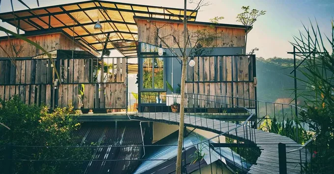
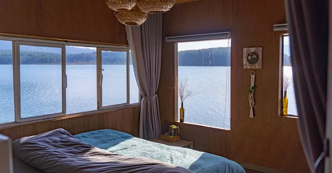
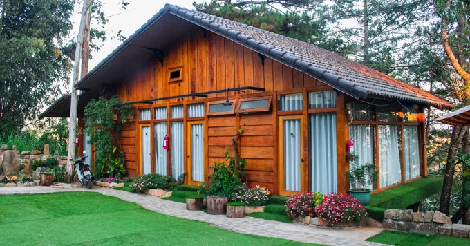
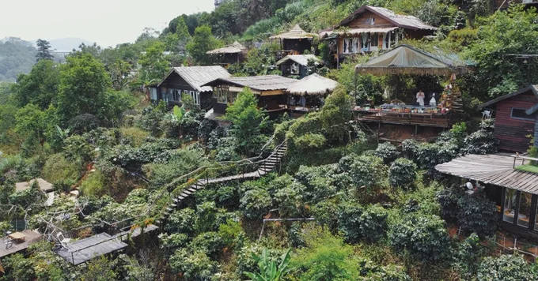

Đà Lạt
Vùng Đất Cổ Tích!
Vùng Đất Cổ Tích!
Chọn homestay Đà Lạt cho kỳ nghỉ ở thành phố ngàn hoa đơn giản hơn bạn nghĩ. Dưới đây là các homestay đẹp, giá rẻ, địa điểm tốt tại Đà Lạt không nên bỏ lỡ.
Tre’s House Đà Lạt – Nhà Của Tre

Tre’s House Đà Lạt mang đậm chất vintage cùng với những món đồ xưa cũ có từ thời “ông bà anh”. Thêm vào đó, không gian thiên nhiên tươi xanh, yên tĩnh đem tới cảm giác rất thư thái. Homestay dễ thương này chắc chắn sẽ làm bạn “đứng ngồi không yên”.
Địa chỉ: 419A Võ Trường Toản, phường 8, thành phố Đà Lạt, tỉnh Lâm Đồng
Lalaland Homestay
Lalaland Homestay nhận được nhiều đánh giá tốt từ du khách. Ngoài khuôn viên đẹp, yên tĩnh, nhân viên thân thiện, Laland còn có quán café riêng theo phong cách công nghiệp độc đáo. Nếu có lỡ hẹn thì bạn cũng có thể tới check-in “sống ảo” cũng được nè.
Địa chỉ: 10A Triệu Việt Vương, phường 4, thành phố Đà Lạt, tỉnh Lâm Đồng
The Lake House Dalat – Ngôi Nhà Bên Hồ
The Lake House Dalat là một ngôi nhà nhỏ xinh nằm ven hồ Tuyền Lâm, xa xa là Thiền viện Trúc Lâm. Đây là lựa chọn của rất nhiều bạn yêu thích sự mộc mạc, giản đơn, và muốn trốn khỏi thế giới xô bồ ngoài kia. Homestay này có đầy đủ tiện nghi cơ bản cho những ngày lưu trú của bạn, chủ nhà thân thiện, chu đáo. Mỗi ngày thức dậy ở The Lake House Dalat, bạn được hít hà hương thơm của núi rừng, và chiêm ngưỡng vẻ đẹp đến nao lòng của thiên nhiên.
Địa chỉ: Vườn Thương, Bến thuyền hồ Tuyền Lâm, Phường 3, thành phố Đà Lạt, tỉnh Lâm Đồng
LengKeng Dalat Homestay

LengKeng nằm khiêm tốn trên sườn đồi, giữa rừng thông Đà Lạt bình yên, với tiếng chuông gió, tiếng sáo vi vu. Đặc biệt, với những bạn yêu cảnh bình minh và hoàng hôn thì chọn ở lại LengKeng Dalat Homestay sẽ không làm bạn thất vọng đâu.
Địa chỉ: 57/4 Hoàng Hoa Thám, phường 10, thành phố Đà Lạt, tỉnh Lâm Đồng
Nomini Homestay
Nomini Homestay tưởng chừng như đơn sơ, mộc mạc nhưng thực ra lại tiện nghi, hiện đại như khách sạn, và nằm ở trung tâm thành phố. Nomini xây dựng nhiều loại phòng, phù hợp cho nhu cầu nghỉ ngơi của từng người.
Địa chỉ: 4 Nguyễn Khuyến, phường 5, thành phố Đà Lạt, tỉnh Lâm Đồng
Cú Trên Cây Homestay
Một ngôi nhà đầy ấn tượng với ý tưởng là những tổ chim cú cheo leo trên cây chính là Cú Trên Cây Homestay. Nơi đây không có gì ngoài sự thoải mái và không gian đậm chất Đà Lạt.
Những căn phòng được gắn tên rất đáng yêu như: tổ cú, tổ chim sẻ, tổ đại bàng. Thiết kế mỗi phòng có ban công nhìn ra thung lũng Đà Lạt tuyệt đẹp, nội thất được làm từ ván gỗ khoác lên lớp sơn đủ màu sinh động.
Địa chỉ: 37 Đặng Thái Thân, phường 3, thành phố Đà Lạt, tỉnh Lâm Đồng
Phù hợp với bạn
Các khu du lịch Đà Lạt có thể kể đến như :